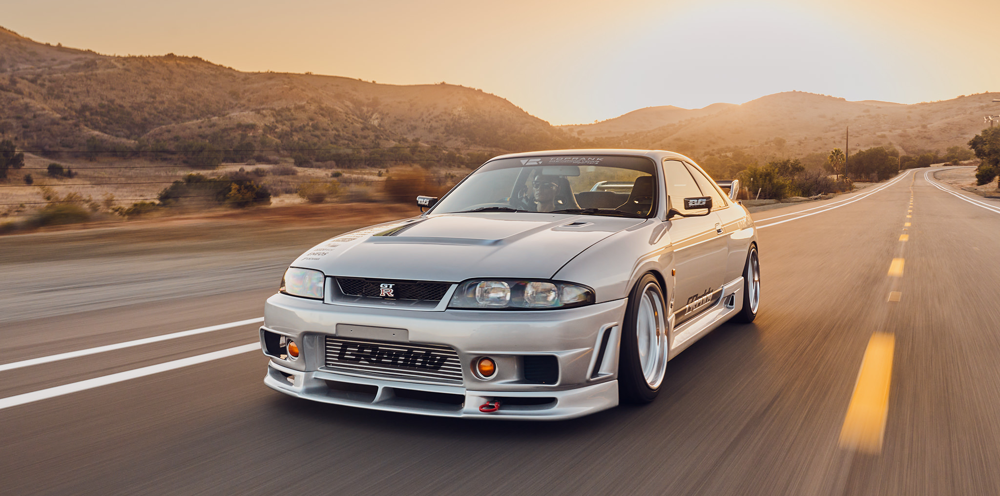

Galeria


A Família GTR da Nissan é uma linha icônica de carros esportivos que começou com o Nissan GT-R original, lançado em 1969. Conhecido por sua performance impressionante e engenharia avançada, o GTR rapidamente ganhou status de lenda entre os entusiastas de carros. O modelo foi inicialmente produzido até 1972, mas retornou em 2007 com o Nissan GT-R R35, mantendo seu legado de inovação e desempenho.
Conhecido como "Godzilla", o R32 foi produzido entre 1989 e 1994. Famoso por sua tecnologia avançada e desempenho, o R32 é considerado um dos melhores esportivos de sua era.
Produzido entre 1995 e 1998, o R33 ofereceu um equilíbrio entre desempenho e conforto, com uma condução mais suave em comparação ao R32.
De 1999 a 2002, o R34 se destacou por seu design e suas capacidades tecnológicas. O R34 é amplamente lembrado e apreciado por sua aparência e desempenho robustos.
Introduzido em 2007, o R35 representa a mais recente evolução da Família GTR. Equipado com tecnologias modernas e desempenho aprimorado, o R35 continua a ser um dos carros esportivos mais desejados.
Para mais informações sobre a Família GTR da Nissan, entre em contato conosco através do e-mail: info@familia-gtr.com.